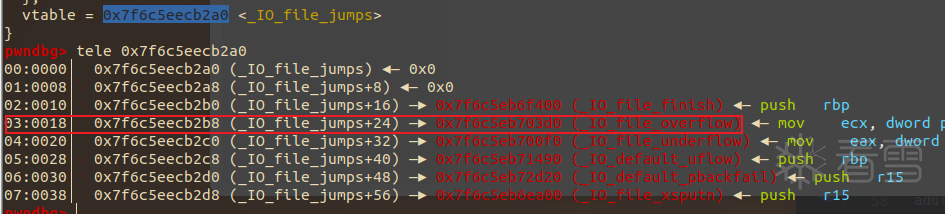

01
前言
glibc 2.37 删除了 _IO_obstack_jumps 这个 vtable，但 obstack 结构体仍然存在。沿着新加入的 printf buffer 路径继续追踪，仍然可以抵达这条调用链的关键部分。

利用概览
这条链与 house of apple、house of cat 等利用思路类似，核心仍是伪造相关结构体，并将虚表指针修改为 _IO_printf_buffer_as_file_jumps。
FSOPOVERFLOWBUFFER FLUSHOBSTACK
调用链分析
在 glibc 2.24 之后，虚函数调用前会验证 vtable 是否位于合法的 _IO_vtable 段中。glibc 2.37 新增的合法虚表给出了新的入口：
C / GLIBC 2.37static const struct _IO_jump_t _IO_printf_buffer_as_file_jumps libio_vtable = { JUMP_INIT_DUMMY, JUMP_INIT(finish, NULL), JUMP_INIT(overflow, __printf_buffer_as_file_overflow), JUMP_INIT(underflow, NULL), JUMP_INIT(xsputn, __printf_buffer_as_file_xsputn), // ... };
当 FSOP 触发 _IO_overflow，控制流进入 __printf_buffer_as_file_overflow。满足 buffer mode 与指针约束后，flush 分支最终抵达 _obstack_newchunk。

完成调用链的必要条件
- 01
file->next->mode必须设置为__printf_buffer_mode_obstack。 - 02
stream 与 next buffer 的 write base、write ptr 和 write end 需要保持一致。
- 03
控制 obstack 的
chunkfun与extra_arg，最终获得目标调用。